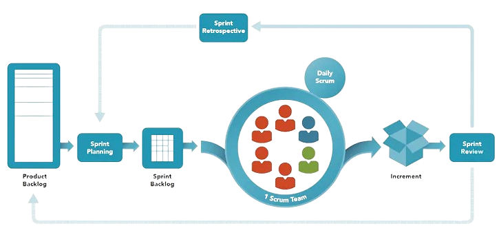

Scrum
Scrum on raamistik, mis võimaldab tarkvaraarendust kiiresti kohandada muutuvatele nõuetele.
See põhineb iteratiivsel ja inkrementaalsel lähenemisel, kus arendustöö on jagatud lühikesteks tsükliteks, mida nimetatakse sprindiks.
Scrum'i keskmes on meeskonnatöö, selge rollide jaotus ning regulaarne tagasiside.

| 1. Tooteomanik |
Vastutab toote visiooni ja nõuete eest. |
Liiga suur vastutus ühe inimese jaoks. |
| 2. Scrum'i meister |
Tagab, et Scrum protsessi reegleid järgitakse. |
Rolli võib segi ajada traditsiooniliste projektijuhiga. |
| 3. Arendustiim |
Iseseisev ja mitmekülgne meeskond, kes teostab arendustööd. |
Võib tekkida kommunikatsiooniprobleeme suuremate meeskondade korral. |
| 4. Tootejärjekord |
Prioriteetide järjestamise nimekiri toote funktsioonidest. |
Liiga suur võib muutuda juhtimisraskuseks. |
| 5. Sprindi ülevaatus |
Regulaarsed kohtumised, kus kuvatakse tehtud tööd ja kogutakse tagasisidet. |
Kui mitte korralikult korraldatud, võib muutuda aja raiskamiseks. |